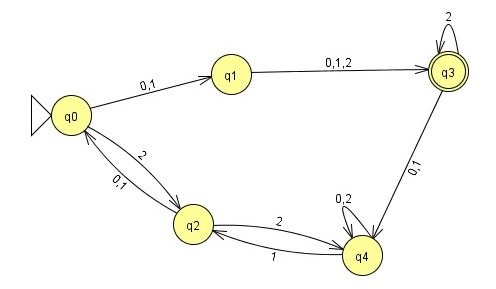

| 03/27/2016 |
Programming
and Automata |
Due: Wed, April 6 1pm |
For this assignment, you may work in pairs (no groups of 3 or more will be permitted).
By putting more than one name on the assignment, you are stating that both people contributed significantly to each part.
By putting more than one name on the assignment, you are stating that both people contributed significantly to each part.
Assignment:
For this assignment, log on to the Hardy House machines and changedirectory to where you wish this assignment to reside.Type:
cp -r ~scottmce/public_html/Spring2016/CMSC208-Grammars/exercises/ DFAprogramming .
Note the period at the end of the previous line. This will copy a folder called DFAprogramming to your directory. Your work will be in this folder and you will submit this folder.
You are welcome to do your work on your personal machine if you'd like, but you will need to upload your work to this directory when you are ready to submit.

0) Consider representing a DFA with a text file with the following format:
An n-state automaton will be labeled by states 0 - n-1.
- Line 1: the alphabet, with no spaces between characters
- Line 2: the number of states (call it n)
- Lines 3 through 3 + (n-1)
- line x indicates row of the transition table associated with the state x - 3
- the columns are in the order fo the alphabet given in line 1, separated by spaces
- Line: 3 + n:
- a single number indicating the initial state
- Line 3 + n + 1:
- a list of numbers indicating final accepting states
| ef 3 0 1 0 2 0 2 0 2 |
Your task:
Create text files with this format for the following automata. Use the filenames given.
| Language/automaton | filename |
| {ACG, ACC, ACT, TCA} | DNA1.txt |
| 2c on page 47 of the text | ex2c.txt |
| 5c on page 47 of the text | ex5c.txt |
| 9a on page 48 | ex9a.txt |
| 9f on page 48 | ex9f.txt |
|  | picture.txt |
1) You are to write a program that will take two command line arguments:
- name of a file with a DFA description (as above)
- name of a file that has a set of strings
The first line of the file will contain a number indicating the number of lines remaining in the file. Each lilne will then contain a string. (note that a blank line will indicate an empty string)
EG
| 7 ef ffeeefff feef ffffffffff eefffeeefffeee ffeffff |
Expected output format:
To the console, your program should report ACCEPTED or NOT ACCEPTED followed by a comma (space on each side of the colon) followed by the string itself. Your output should contain one line per string and no other output.
Sample output when using the example files above:
| NOT ACCEPTED : ef ACCEPTED : ffeeefff NOT ACCEPTED : feef NOT ACCEPTED : ACCEPTED : ffffffffff NOT ACCEPTED: eefffeeefffeee ACCEPTED : ffeffff |
The program has been started for you in the file TestDFA.cpp. This program reads the command line arguments into variables for you to be able to read the info from the files.
A sample of what I will do to test your program:
g++ TestDFA.cpp -o runit.exe
./runit.exe DFAfromExam.txt SampleInputForDFAfromExam.txt
Testing:
You will need to come up with your own testing inputs for each of the automata. The table below indicates the required filenames for the testing inputs:
| Language/automaton | filename | inputfile |
| {ACG, ACC, ACT, TCA} | DNA1.txt | SampleInput-DNA1.txt |
| 2c on page 47 of the text | ex2c.txt | SampleInput-ex2c.txt |
| 5c on page 47 of the text | ex5c.txt | SampleInput-ex5c.txt |
| 9a on page 48 | ex9a.txt | SampleInput-ex9a.txt |
| 9f on page 48 | ex9f.txt | SampleInput-ex9f.txt |
| picture.txt | SampleInput-picture.txt |
Suggestion:
Read the DFA file into the following variables:
vector<char> alphabet;
vector < vector<int> > transitionTable;
int initialState;
vector <int> finalStates;
2) Now, consider NFAs. Your task is to create:
- a set of variables that will hold an NFA.
- a file format for storing NFAs
- code to read in an NFA file into the variables.
- Extra credit: code that traces the automaton and determines if a given string is to be accepted.
In the folder, you should have the following files:
- TestNFA.cpp - the program that holds the variables and reads the contents of the file into those variables
- Format.txt - a text file describing the file format for the NFA inputs, including at least one example
- ex12pg55.txt - a text file describing the NFA in exercise 12 on page 55 of the text
3) EXTRA CREDIT:
Create a subfolder called NamedStates. Create new data files and a program that allows the states to have names rather than just numbers. For instance, the 3 state automaton from the exam might have a file that looks like this:
ef
3
Spot Fido Rover
Spot: Spot Fido
Rover: Spot Rover
Fido: Spot Rover
Spot
Rover
Note that the lines of the file indicating the rows of the transition table are now not in any particular order, but are first labeled with the current state of the transition.
Handin:
Create a file called Names.txt in the folder. In that file should be the name(s) of the people who worked on this assignment. By putting a name here, you are indicating that both people contributed significantly to each part of the assignment.Detailed instructions will be given on Mon, April 4.